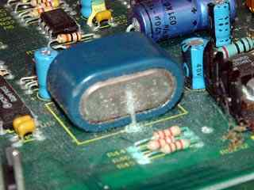
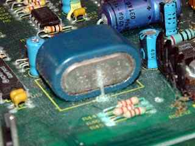
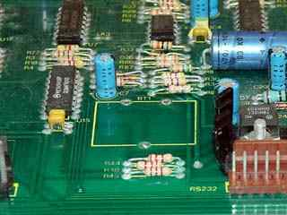
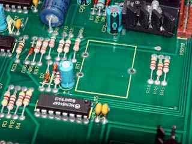
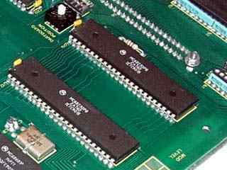
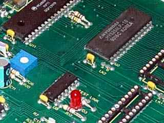
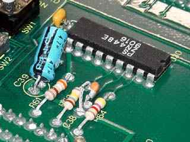
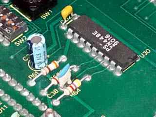

|
|
Preparation. By Lee Davison. |
|
These boards come from ex-equipment surplus stock and as such are not in perfect condition. They are however, with a little work, repairable as working boards.
 

The first thing that should be done is the removal of the NiCad battery. These boards have not been powered for some time and the batteries have suffered. In most cases the cells have leaked and started to corrode the surrounding board. Either unsolder the cells or cut them off but do it now. Once the battery is removed you can clean the area round the battery with either detergent or a non grease solvent (meths, ULS400D etc.) and a stiff brush.
 
After the battery has been removed and the area cleaned of any corrosion remove all the socketed chips in preparation for a thorough cleaning.
Now clean the whole board either in a dishwasher on the 'intensive' cycle or by hand usign a strong detergent and a stiff brush. Pay particular attention to any stained or corroded areas and to the legs of the ICs and the socket pins. Once the board is cleaned rinse thoroughly with hot water and any excess water can be shaken off by tapping the long edge of the board on a firm surface. The board can then be dried either with a hairdryer on the 'cool' setting or by leaving the board in a warm place for 24 hours.
Finally clean the board again using a non grease solvent and a stiff brush again paying attention to the IC legs and sockets.
The clean board should now look like this.
 
Once the board is clean inspect it for broken or missing components. Capacitors, because they are vertically mounted, often get damaged by careless handling. Replpace or resolder any that are suspect or obviously damaged.
 
| Last page update: 4th May, 2004. | e-mail me
 |